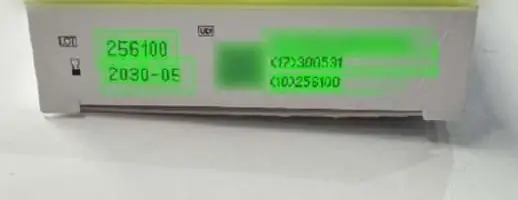
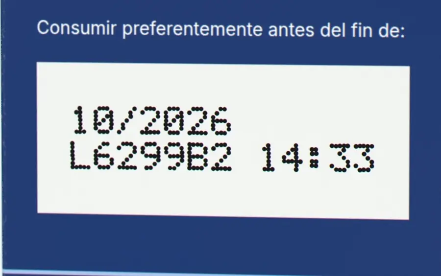
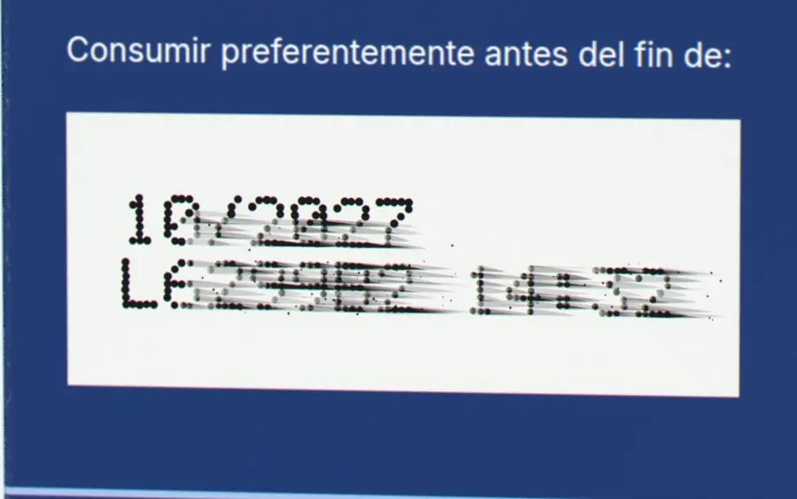
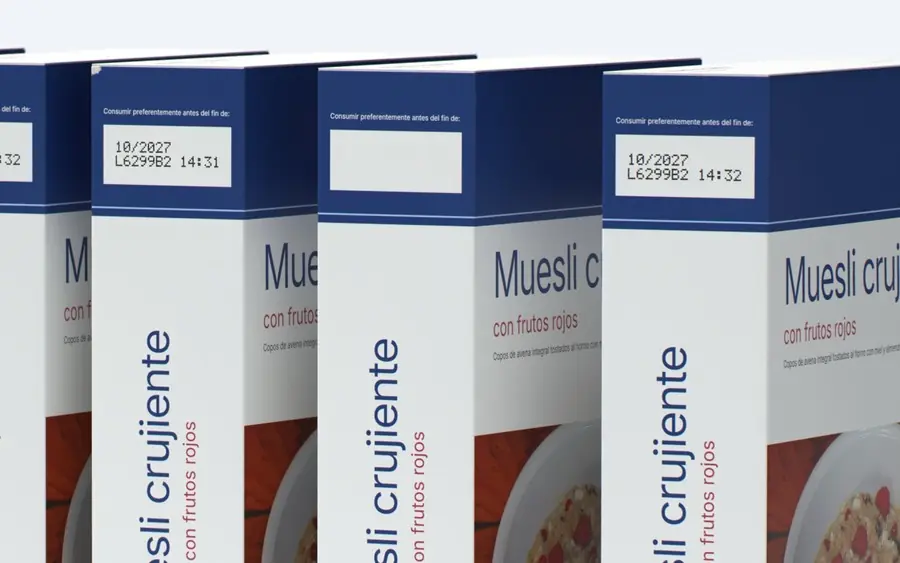

Cada marcaje, leído y comparado con la receta
OPTICAIS lee el contenido variable impreso, lo contrasta con los datos esperados del producto y clasifica cada lectura como OK o NOK en tiempo real.

Lecturas
| Texto OCR | Lote, fecha de caducidad y número de serie |
|---|---|
| Códigos 1D y 2D | Data Matrix: presencia, legibilidad y contenido |
| Motivos fijos | Impresos, para validar el contenido y su coherencia |
| Posición | Del marcaje en el envase |
| Campos | OCR y de códigos ilimitados; su número influye en la cadencia |

Fecha incorrecta

Marcaje ilegible

Marcaje ausente
Tecnologías de marcaje
Para la lectura OCR, los caracteres impresos no deben tocarse entre sí. El número de campos analizados influye en la cadencia.